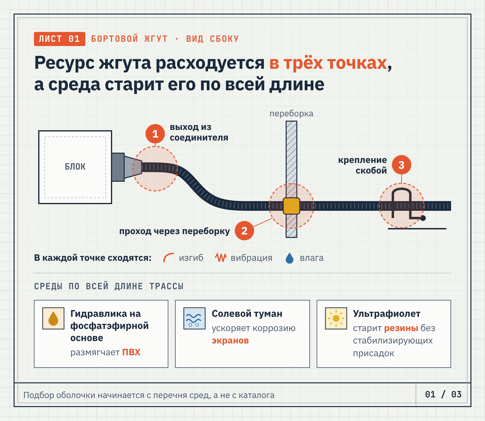
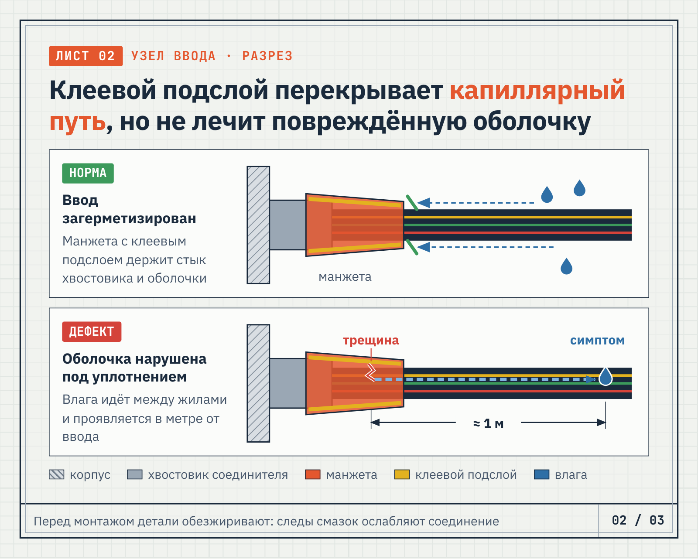
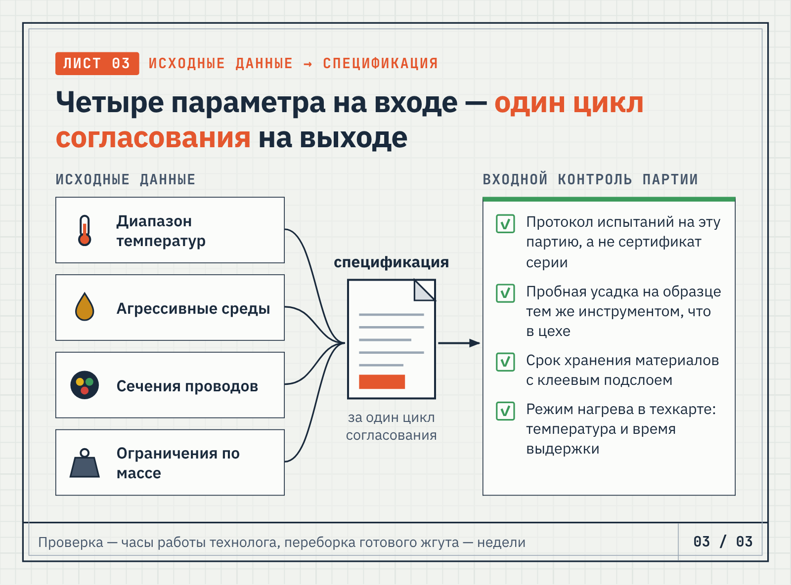

«Кросс-Контакт» · Экспертная статья · авиация и ОПК
Экспертная статья «Кросс-Контакта» об изоляции для авиации и ОПК
В 2026 году писала для «Кросс-Контакта» — московского поставщика кабельной арматуры и изоляционных материалов, который работает с 1995 года. Компании нужны экспертные статьи для B2B-аудитории: проектировщиков, монтажников и технологов. В августе 2026 года сдала две статьи, об изоляции шин и кабелей 10 кВ и о решениях для авиации и ОПК, с инфографикой-чертежами.
«Кросс-Контакт»kross-kontakt.ru
«Кросс-Контакт» — московский поставщик кабельной арматуры и изоляционных материалов, работает с 1995 года. В ассортименте муфты, термоусаживаемые трубки и ленты, герметики и мастики Raychem, 3M и ACS со склада в Москве, с нарезкой и комплектацией под проект.
- Площадка
- Блог kross-kontakt.ru
- Формат
- Экспертная статья в блог
- Год
- 2026
Задача
Показать разработчикам и технологам авиационной техники и ОПК, что поставщик понимает механизмы отказа бортовой сети. Статья собирает трафик по ключам о термоусадке для БПЛА и изоляции для авиации и готовит к запросу спецификации.
Решение
Выстроила статью вокруг реальных механизмов отказа: переходные участки жгута, агрессивные среды, параметры спецификации, герметизация вводов, проект трассы и входной контроль партии. Отдельно разобрала экономию массы на БПЛА, ключи вписала по одному разу.
Результат
Текст сдан в августе 2026 года и принят без правок. Финал без рекламного пафоса: список исходных данных, с которыми спецификация согласуется за один цикл. Для портфолио добавлены три инфографики-чертежа.
Изоляция для авиации и ОПК: решения для критически важных систем
Отказ бортовой кабельной сети редко начинается с обрыва жилы. Чаще виновата микротрещина в оболочке: через неё проходит конденсат, а дальше идёт коррозия контактной группы.
Поэтому в авиационной технике и изделиях оборонного назначения защитные материалы оценивают не по толщине стенки, а по поведению в конкретном режиме: при вибрации, перепадах давления, контакте с топливом и противообледенительными жидкостями.
Что выводит защитную оболочку из строя раньше срока
Ресурс кабельной сборки расходуется неравномерно. Основная нагрузка приходится на переходные участки: выход из соединителя, проход через переборку, зону крепления скобой. Здесь сходятся изгиб, вибрация и влага, поэтому именно эти точки задают срок службы всей трассы.

Второй фактор — состав среды. Гидравлика на фосфатэфирной основе размягчает ПВХ, солевой туман ускоряет коррозию экранов, ультрафиолет старит резины без стабилизирующих присадок. Подбор оболочки начинается с перечня сред, а не с листания каталога.
Материал, отработавший тысячу часов в термокамере, способен разрушиться за один сезон, если жгут трётся о кромку лючка.
Термоусаживаемые материалы: настройка под конкретный узел
Универсальной трубки для бортового жгута не существует, а ошибка в выборе проявляется после первых термоциклов. Под каждый узел подбирают сочетание характеристик и фиксируют его в спецификации:
- коэффициент усадки 2:1, 3:1 или 4:1;
- наличие клеевого подслоя;
- рабочий диапазон температур;
- стойкость к топливу и гидравлике;
- пригодность к нанесению маркировки.
Точно подобранное сочетание надёжнее, чем запас по толщине стенки. Термоусадку для БПЛА подбирают с оглядкой на массу: там, где на пилотируемой технике ставят двухслойную манжету, на беспилотнике берут тонкостенный материал с внутренним клеевым слоем.
Герметизация вводов, переборок и разъёмов
Самое уязвимое место — вход жгута в корпус. Здесь работают концевые манжеты с адгезивным подслоем, вводы с эластомерным уплотнением и формованные детали по геометрии хвостовика соединителя. Задача у всех одна: перекрыть капиллярный путь для влаги.

Отдельно проверяют чистоту поверхности: следы технологических смазок снижают прочность соединения в разы, поэтому детали обезжиривают прямо перед монтажом.
Герметик не компенсирует повреждение оболочки. Если она нарушена под уплотнением, влага пройдёт между жилами и проявится в метре от места ввода, где искать причину заметно сложнее.
Проектирование жгута: что закладывают заранее
Кабельная архитектура определяет ремонтопригодность изделия на весь срок службы, а переделка после первых испытаний обходится дорого. На этапе проекта фиксируют четыре решения:
- Разделение по классам сигналов. Силовые, сигнальные и высокочастотные линии разводят разными трассами.
- Защита переходов. На изгибах и в точках крепления предусматривают манжету, отвод или демпфирующую подмотку.
- Ремонтная длина. Запас провода у соединителя позволяет переразделать контакт без замены всей ветви.
- Читаемая маркировка. Обозначение должно сохранять разборчивость после термоциклов и контакта с ГСМ.
Если заложить всё это заранее, доводка пойдёт быстрее. Большинство замечаний по итогам стендовых испытаний касается не схемотехники, а физического исполнения трассы.
Как подтвердить характеристики до монтажа
Паспорт описывает типовую партию, а на изделие идёт конкретная. Разница проявляется на границе рабочего диапазона, поэтому входной контроль строят по четырём пунктам:
- Запросите протокол испытаний на поставляемую партию, а не сертификат серии.
- Проведите пробную усадку на образце тем же инструментом, что пойдёт в цех.
- Уточните срок хранения адгезивных материалов: после его истечения клей теряет свойства.
- Зафиксируйте режим нагрева в технологической карте — температуру и время выдержки.
Проверка занимает часы работы технолога, тогда как переборка готового жгута отнимает недели.
Что это даёт на практике
Изоляция и герметизация в авиационных системах складываются из деталей, которые дешевле заложить в проект, чем исправлять после испытаний. Подобранная под режим трубка, чистая поверхность под герметиком и продуманная трасса дают предсказуемый ресурс без избыточных запасов «на всякий случай».

Подбор идёт быстрее, когда поставщик сразу получает исходные данные: диапазон температур, перечень агрессивных сред, сечения проводов и ограничения по массе. С такими данными спецификацию обычно удаётся согласовать с первого раза.